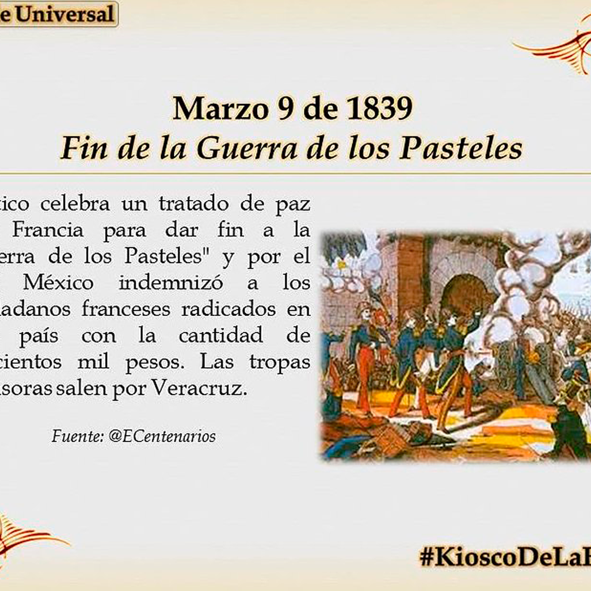

El 9 de marzo de 1839 México firmó el Tratado de paz con Francia, poniendo fin a la Primera intervención
francesa, también conocida como "Guerra de los pasteles", un hecho que formó parte del panorama
conflictivo internacional dominante del siglo XIX, entre las potencias europeas y las naciones
recién constituidas.

Ante la victoria francesa, comenzaron las negociaciones para poner fin a la guerra, siendo
el diplomático Inglés Richard Pakenham, el mediador entre Francia, representado por Charles
Baudin; y México, quien eligió como plenipotenciarios a Guadalupe Victoria y a Manuel Eduardo de
Gorostiza.
Dicho acuerdo fue firmado en Veracruz el 9 de marzo de 1839, concluyendo así las hostilidades
y el bloqueo francés; y acordando la entrega de la fortaleza de San Juan de Ulúa a México y el
pago de 600 mil pesos a Francia por parte del Gobierno mexicano.